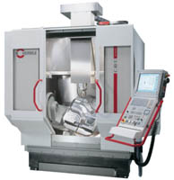

|
 CAD/CAM
alanýnda sahip olduðumuz tecrübeli alt yapýmýzla yola çýkarak,
CNC iþleme merkezleri konusunda en çok ihtiyaç duyulan özellikleri
belirledik.Yapmýþ olduðumuz araþtýrmalar sonucunda uzun yýllar
teknolojisi ile hassas ve hýzlý bir üretimi saðlayacak bir
marka bulduk; ALMANYA- STUTTGART'ta faaliyet gösteren 1938
yýlý kurulumu bir üretici firma olan HERMLE, bazý özellikleri
ile sanayicilerimizin üretiminde ihtiyaç duyduklarý, kalite
ve zaman performansýný üst seviyeye taþýmaktadýr: CAD/CAM
alanýnda sahip olduðumuz tecrübeli alt yapýmýzla yola çýkarak,
CNC iþleme merkezleri konusunda en çok ihtiyaç duyulan özellikleri
belirledik.Yapmýþ olduðumuz araþtýrmalar sonucunda uzun yýllar
teknolojisi ile hassas ve hýzlý bir üretimi saðlayacak bir
marka bulduk; ALMANYA- STUTTGART'ta faaliyet gösteren 1938
yýlý kurulumu bir üretici firma olan HERMLE, bazý özellikleri
ile sanayicilerimizin üretiminde ihtiyaç duyduklarý, kalite
ve zaman performansýný üst seviyeye taþýmaktadýr:
- Mineral
Döküm Gövde:
Patentli Gövde; mineral döküm yöntemi ile bir kerede dökülür.
Metal olmayan bu yapýda tüm iç gerilmeler minimize edilmiþ
ve titreþimi sönümleyen bir iç yapý ile üretilmiþtir. Bir
kerede dökülmesi; oldukça rijit bir yapý saðlamaktadýr.
- Üçlü
Kýzak Sistemi:
Ýki yanda ve bir ortada olmak üzere eþ kenar üçgen yapýsý
ile kolonlarýn üzerinde yer alan kýzak sistemi patentli
olup, tezgahýn hareketlerinde meydana gelebilecek ataletleri
yok eder.
- Sabit
Tabla:
Tezgah, kesim yaparken parça aðýrlýðýndan baðýmsýz hareket
ederek; takým iþ parçasý üzerinde iken max. hýzlara ulaþabilmektedir.
Bu özelliði ile çok kýsa sürelerde oldukça hassas iþlemeler
yapýlabilmesine imkan saðlar.
- 4
ve 5 Eksen:
4 ve 5 eksenlerde özel olarak tasarlanmýþ tabla; yan duvarlara
monte edilerek, yine patentli olan bu özelliði ile, çok
yüksek hýzlarda, çok hassas ( iþleme esnasýnda meydana gelebilecek
titreþim ve ataletler mineral döküm gövde üzerinde sönümlenir)
iþlemeler yapýlmasýna olanak saðlar.
- Kontrol
Ünitesi:
HEIDENHAIN ITNC 530 yada Siemens 840D
HERMLE
HIGH SPEED iþleme merkezleri, 10.000, 18.000, 28.000, 40.000
devir seçenekleri ve yukarýda bahsi geçen çarpýcý özellikleri
ile hedef olarak, üretiminde hýzý ve kaliteyi uzun yýllar
muhafaza etmeyi amaç edinmiþ, ve bu uðurda yatýrýmlarýnýn
en iyi þekilde karþýlýðýný almayý hedef edinen sanayicilerimizin
tercih edeceði bir cihazdýr.
TÜRKÝYE
sanayi alanýnda hýzla geliþen ve her geçen gün, güçlü ve kaliteli
bir üretim için daha bilinçli yatýrým yapan bir ülke olma
yolunda büyük adýmlar atmaktadýr. Dolayýsý ile, bu alanda
ihtiyaç duyulan iþleme merkezleri artýk HERMLE gibi kaliteli
ve hýzlý üretimi uzun yýllar saðlayan iþleme merkezleridir.
Firma
hakkýnda:
Numerik
Kontrol Grup Ltd. Þti. iki yýlý aþkýn süredir CAD /CAM ve
CNC iþleme merkezleri konularýnda danýþmanlýk, satýþ ve teknik
destek baþta olmak üzere sanayicilerimize teknolojik anlamda
anahtar teslimi çözümler sunmaktadýr.
Tecrübeli
ve uzman kadrosu ile kurulduðu günden bu yana 100'ü aþkýn
müþteri referansý ile pek çok projeye imza atmýþtýr.
CAD/CAM
alanýnda THINK DESIGN CAD SÝSTEMÝ, MACHINING STRATEGIST HIGH
SPEED CAM SÝSTEMÝ, HYPERMILL CAM SÝSTEMÝ; ölçme ve kopyalama
sistemleri konusunda MICROSCRIBE DIGITIZING CÝHAZI; CNC iþleme
merkezleri alanýnda ALMAN yapýmý HERMLE iþleme merkezlerinin
TÜRKÝYE ve ORTADOÐU distribütörlüðünü yapmaktayýz.
Ýrtibat:
Numerik
Kontrol Grup Ltd. Þti.
Gülbahar
Mah. Balaban Sok. Meriç Konak 10 Apt. No:5 Dükkan 3-5
Gayrettepe / Ýstanbul
Tel : (212) 274 89 42
Faks: (212) 275 60 15
Web: www.nkg.com.tr
E-Posta:
bilgi@nkg.com.tr
|